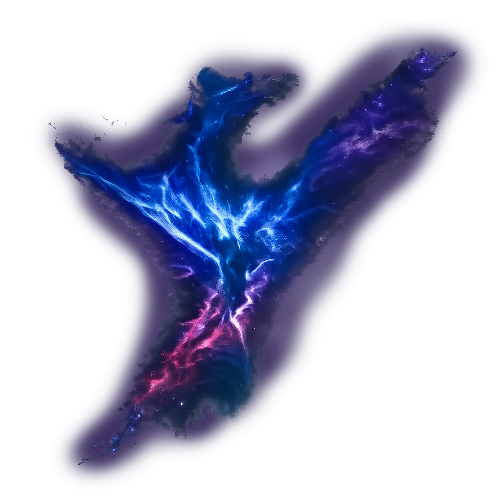
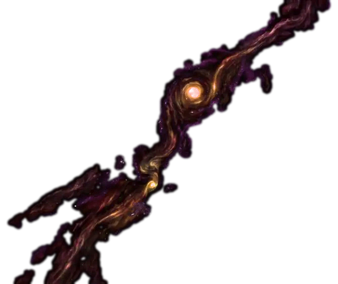
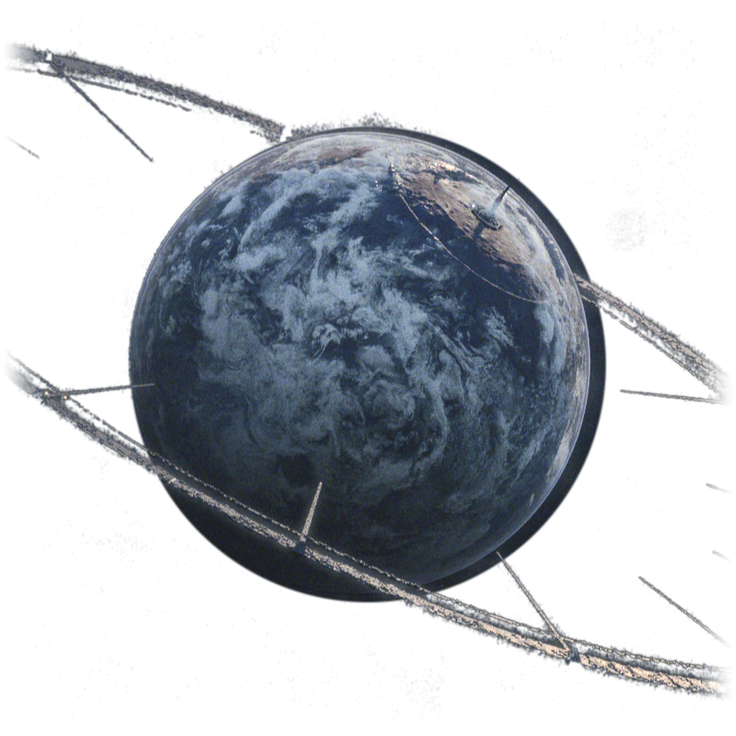

カタリナ
GREAT WALL AREA1 / KATINA
カタリナ / GREAT WALL AREA1 / KATINA
防衛拠点 -- サバンナ型惑星

コーネリア
CORNERIA
コーネリア / CORNERIA
首都惑星 -- E1型 地球型
OBERON

GREAT WALL area2

GREAT WALL area3

SECTOR Y

フォルトナ
FORTUNA
フォルトナ / FORTUNA
密林惑星 -- 原始生態系

マクベス
MACBETH
マクベス / MACBETH
鉱山惑星 -- ベノム帝国占領

タイタニア
TITANIA
タイタニア / TITANIA
禁断の惑星 -- E1型 磁気嵐

サルガッソー
SARGASSO
サルガッソー / SARGASSO
宇宙の墓場 -- 特A級危険宙域

フィチナ
FICHINA
フィチナ / FICHINA
氷結惑星 -- 気候制御基地跡
SECTOR X
ZONESS

ソーラ

プロスペロー
PROSPERO
プロスペロー / PROSPERO
居住惑星 -- 星系最大人口
SECTOR Z
ORBITAL GATE

ベノム
VENOM
ベノム / VENOM
帝国首星 -- E2型 死の惑星